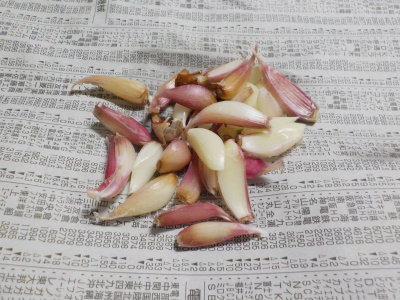
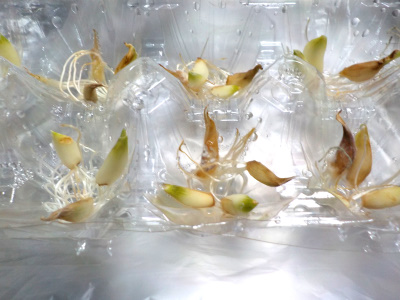
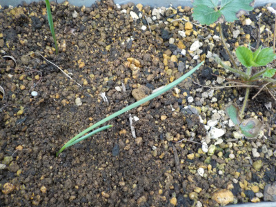
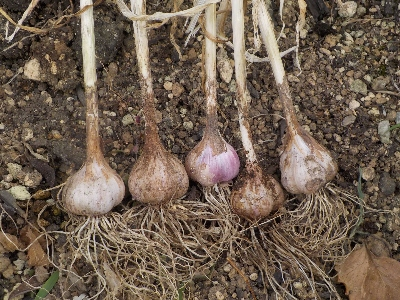

にんにくの味噌漬けを作りました。
更新日 : 2023/08/06

家で収獲したニンニクで味噌漬けを作りましたが、あんまり小さいのは使えないかなと思い外しました。
これを育ててみようと思っています。
小さいニンニクでニンニク作ると、小さいニンニクが出来るそうです。大きいのと小さいのを一緒に育てたら、大きい方が成長が良く大きく育つのは普通だと思います。
植えるんなら大きい方がいいと思いますが、球根で増やす限り同じDNAなんですよね。そんなに違いはないんじゃないかなー。
小さいの植えてもいいんじゃないかなーと思いました。
今暑くて植える時期じゃないみたいなので、これは冷蔵庫に入れました。
冷蔵庫のニンニクに根っこが出てたので水耕栽培にしました。
更新日 : 2023/09/07

冷蔵庫で保存していたニンニクに根っこが出ていました。寒いと休眠すると思っていたんですが、そうじゃないんですね。
根っこ出たんなら育てようと思いましたが、暑い時期に植えると病気になっるってNET記事が多くあったので、畑に植えるのは止めました。
家の中で水耕栽培なら、病原菌がやって来ないかなと思いやってみました。
家の中で日が当たる場所は暑いですが、ちゃんと育つかな？
ニンニクを苺のプランターに植えました。
更新日 : 2023/10/08

ニンニクはイチゴのコンパニオンプランツだそうなので、水耕栽培で育てた小さいニンニクをイチゴの側に植えました。
両方大きく育って欲しいです。
小さいニンニクを植えたら小さいニンニクが出来ました。
更新日 : 2024/06/21

小さいニンニクでも早く植えれば大きくなるだろうと育てたニンニクです。
結果は大きく成りませんでした。これは小さすぎるので食べないな。
もう小さいニンニクは育てません。